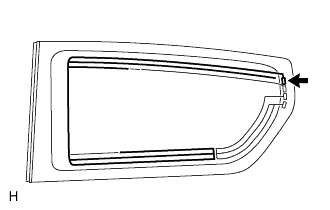
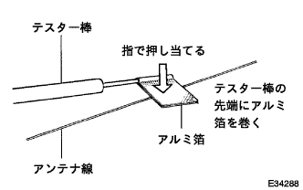
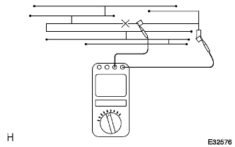
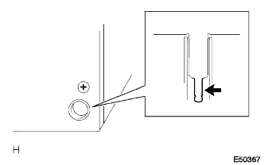
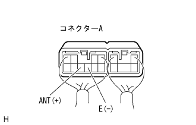
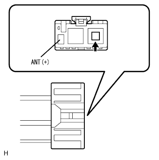
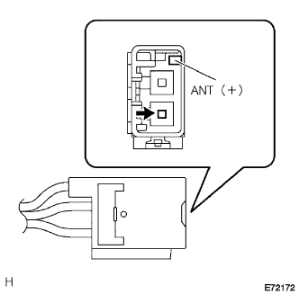

”ワイドマルチAVステーシヨン”システム ラジオが受信できない(受信状態が悪い) |
参照)| 手順1 | 車両移動点検 |
車両移動
車両をラジオ放送が受信できるように移動させ、機能が正常に戻るか点検する。
|
| ||||
| NG | |
| 手順2 | 後付け部品点検（サンシェードフィルム、電話アンテナ等） |
後付け部品点検
サンシェードフィルムおよび電話アンテナなどの後付け部品が装着されているか点検する。
|
| ||||
| OK | |
| 手順3 | アンテナ雑音発生点検 |
|  |
アンテナ雑音発生点検
IGスイッチACCで、ラジオの電源を入れ、AMモードにする。
クオーターウインドゥASSY ＲＨ(ウインドウプリント式アンテナ)のアンテナ端子露出部にドライバーを接触させたとき、スピーカーから雑音が発生することを点検する。
|
| ||||
| OK | |
| 手順4 | ウインドゥプリント式アンテナ断線点検 |
|  |
ウインドゥプリント式アンテナ断線点検
|  |
SST(トヨタエレクトリカルテスター)を使用して、プリント式アンテナにテスター棒を当てていき、導通がなくなる箇所がないかを点検する。
|
| ||||
| OK | ||
| ||
| 手順5 | ナビゲーション レシーバASSY点検 |
|  |
点検前準備
ナビゲーションレシーバーASSYを取りはずせる状態にする。
アンテナのプラグを切り離す。
雑音発生点検
ナビゲーションレシーバーASSYのコネクターを接続状態で、IGスイッチをACCにする。
ラジオの電源を入れ、AMモードにする。
ナビゲーションレシーバーASSYのアンテナジャック部に薄刃マイナスドライバーまたは細い針金等の金属を接触させた時、スピーカーから雑音が発生することを点検する。
|  |
電圧点検
SST(トヨタエレクトエレクトリカルテスター)を使用して、車両側ワイヤハーネスのコネクターを接続した状態で、コネクターの裏側からANT(A8)←→E(A7)間の電圧を点検する。
| テスター接続 | 測条件 | 基準値 |
|---|---|---|
| ANT(A8)←→E(A7) | ラジオ(AM/FM)受信中 | 10-14V |
|
| ||||
| OK | |
| 手順6 | アンテナコードNo.2点検 |
|  |
点検前準備
アンプリファイアアンテナASSYとアンテナコードNo.2の接続部が見るようにする。
アンプリファイアアンテナASSYとアンテナコードNo.2の接続部のコネクタを切り離す。
雑音発生点検
ナビゲーションレシーバーASSYのコネクタを接続しあ状態で、IGスイッチをACCにする。
ラジオの電源を入れ、AMモードにする。
アンテナコードのアンテナジャック部に薄刃マイナスドライバーまたは細い針金等の金属部を接触させたとき、スピーカーから雑音が発生することを確認する。
電圧点検
SST(トヨタエレクトリカルテスター)を使用して、アンテナコードNo.2コネクタの裏側からANT(1)端子←→ボデーアース間の電圧を点検する。
| テスター接続 | 測定条件 | 基準値 |
|---|---|---|
| ANT(1)←→ボデーアース | ラジオ(ＡＭ/ＦＭ)受信中 | 10-14V |
|
| ||||
| NG | |
| 手順7 | アンテナ コードSUB-ASSY点検 |
|  |
点検前準備
アンテナコードNo.2とアンテナコードの接続部が見えるるようにする
アンテナコードNo.2とアンテナコードの接続部のコネクタを切り離す。
雑音発生点検
ナビゲーションレシーバーASSYのコネクタを接続しあ状態で、IGスイッチをACCにする。
ラジオの電源を入れ、AMモードにする。
アンテナコードのアンテナジャック部に薄刃マイナスドライバーまたは細い針金等の金属部を接触させたとき、スピーカーから雑音が発生することを確認する。
電圧点検
SST(トヨタエレクトリカルテスター)を使用して、アンテナコードNo.2コネクタの裏側からANT(1)端子←→ボデーアース間の電圧を点検する。
| テスター接続 | 測定条件 | 基準値 |
|---|---|---|
| ANT(1)←→ボデーアース | ラジオ(ＡＭ/ＦＭ)受信中 | 10-14V |
|
| ||||
| NG | ||
| ||